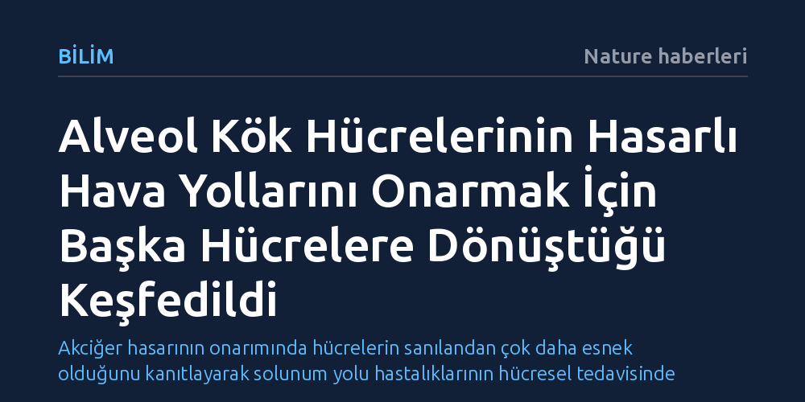

BILIM · Nature haberleri · 2026-10-15
Akciğerdeki alveol kök hücrelerinin, sadece gaz değişimini sağlamakla kalmayıp hasar gören hava yollarını onarmak için doğrudan bronşiyol epitel hücrelerine dönüştüğü gösterildi. Bu bulgu, akciğer dokusunun yenilenme hiyerarşisine dair yerleşik biyolojik kabulü kökten değiştiriyor.
Akciğer hasarının onarımında hücrelerin sanılandan çok daha esnek olduğunu kanıtlayarak solunum yolu hastalıklarının hücresel tedavisinde yeni bir çığır açıyor.

Akciğerlerimiz temelde iki ana bölgeye ayrılır: Havayı içeri ve dışarı taşıyan iletici boru hatları (bronşlar ile bronşiyoller) ve oksijenin kana geçmesini sağlayan mikroskobik gaz değişim odacıkları (alveoller). On yıllardır solunum biyolojisinin temel kabullerinden biri, bu iki anatomik bölgenin birbirinden bağımsız kök hücre havuzları tarafından yönetildiği yönündeydi. Yaygın öğretiye göre hava yollarındaki hasarları yalnızca o bölgedeki yerel kök hücreler onarabiliyor, alveollerdeki kök hücreler (Tip 2 alveol epitel hücreleri) ise yalnızca gaz alışverişini yürüten Tip 1 hücreleri üretmekle yetiniyordu.
Nature'da yayımlanan yeni bulgular, bu katı anatomik ve gelişimsel sınırı temelinden sarstı. Araştırmacılar, hava yollarında meydana gelen ağır hasarların ardından derinlerdeki alveol kök hücrelerinin kendi sınırlarını aşarak solunum borucuklarına doğru göç ettiğini ve burada bronşiyol epitelini yeniden inşa ettiğini ortaya koydu. Bu durum, akciğer kök hücrelerinin önceden düşünüldüğünden çok daha dinamik ve esnek bir onarım kapasitesine sahip olduğunu gösteriyor.
Hücresel hiyerarşideki bu beklenmedik esneklik, organların ağır doku yıkımlarında başvurduğu acil durum stratejilerini yeniden tanımlıyor. Gaz değişiminden sorumlu hücrelerin gerektiğinde hava yolu çeperini tamir eden işlevsel hücrelere dönüşebilmesi, akciğerin kendi kendini iyileştirme gücünün sınırlarını genişletiyor.
Bu sürecin temelinde, biyolojide "transdiferansiyasyon" olarak adlandırılan doğrudan soy dönüşümü yatıyor. Klasik biyolojik modelde, özelleşmiş bir hücrenin farklı bir doku tipine dönüşebilmesi için önce ilkel ve farklılaşmamış bir kök hücre evresine geri dönmesi beklenir. Ancak akciğerdeki Tip 2 alveol hücreleri, ara bir kök hücre aşamasına dönme gereksinimi duymadan doğrudan hava yollarını kaplayan sekretuvar ve silyalı bronşiyol epitel hücrelerine farklılaşabiliyor.
Gelişmiş genetik izleme yöntemleri, bu dönüşümün rastlantısal bir sızıntı olmadığını, doku hasarına karşı geliştirilmiş programlı bir kurtarma mekanizması olduğunu kanıtlıyor. Bronşiyollerdeki yerel kök hücre havuzu toksinler, ağır enfeksiyonlar veya mekanik hasar nedeniyle tükendiğinde, komşu alveol kök hücreleri doku bütünlüğünü korumak adına devreye girerek hasarlı solunum yollarını hızla kolonize ediyor.
Bu dönüşüm sırasında hücrelerin morfolojik yapıları, salgıladıkları proteinler ve gen ifade profilleri tamamen hava yolu epitelinin ihtiyaçlarına göre yeniden programlanıyor. Normalde gaz değişimini kolaylaştıran sürfaktan üretiminden sorumlu olan bir hücre, birkaç adımda hava yolundaki mukusu süpüren ya da koruyucu bariyer işlevi gören işlevsel bir hava yolu hücresine evriliyor.
Akciğer dokusunun kendini yenileme kapasitesi; KOAH, idiyopatik pulmoner fibrozis ve ağır viral enfeksiyonların (örneğin şiddetli zatürre veya COVID-19) ardından kalıcı hasar gören hastalar için hayati önem taşır. Bu hastalıklarda en büyük açmaz, hava yollarındaki harabiyetin geri döndürülemez doku kaybına veya fonksiyonel olmayan nedbe dokusuna yol açmasıdır. Alveol kök hücrelerinin bu gizli onarım potansiyelinin anlaşılması, solunum yollarını dışarıdan bir müdahaleye gerek kalmadan içeriden onarabilecek hücresel mekanizmaların kapısını aralıyor.
Hücre tedavilerinde dışarıdan laboratuvar ortamında üretilmiş kök hücre nakletmek, bağışıklık reddi ve kontrolsüz büyüme gibi ciddi riskler barındırır. Oysa hastanın kendi akciğerinde hâlihazırda bulunan alveol kök hücrelerini uygun sinyal molekülleriyle uyararak hava yollarına göç etmelerini ve transdiferansiyasyon geçirmelerini sağlamak, son derece güvenli ve hedefe yönelik bir biyolojik onarım stratejisi doğurabilir.
Araştırma, rejeneratif tıbbın odak noktasını sentetik hücre naklinden vücudun kendi yerel kök hücre plastisitesini harekete geçiren biyokimyasal çözümlere kaydırma potansiyeline sahip. Akciğerin kendi onarım cephanesinde böylesi bir esnekliğin varlığı, bugüne dek tedavisi güç kabul edilen doku yıkımlarında yeni bir umut vadediyor.
Bu hücresel esneklik akciğerin kurtarılmasında kritik bir rol oynasa da araştırmacıların önünde yanıtlanması gereken önemli sorular bulunuyor. Alveol kök hücrelerinin hava yollarını onarmak için kitlesel olarak seferber edilmesi, geride kalan gaz değişim bölgelerinde bir hücre açığı yaratabilir mi? Alveol kök hücreleri hava yollarını tamir etmeye harcanırken uzun vadede gaz geçirgenliği ve alveol yenilenmesi zayıflayabilir mi sorusu titizlikle incelenmeyi bekliyor.
Bunun yanı sıra, kontrol mekanizmaları tam anlaşılamamış bir dönüşüm sürecinin anormal hücresel farklılaşmalara veya fibrotik doku oluşumlarına yol açma riski de göz ardı edilmemeli. Bilim insanlarının bir sonraki hedefi, bu moleküler anahtarı hangi kimyasal sinyallerin açıp kapattığını tam olarak haritalamak ve dönüşümün yalnızca hasar giderilene kadar güvenli bir pencerede işlemesini sağlayacak biyokimyasal frenleri aydınlatmaktır.